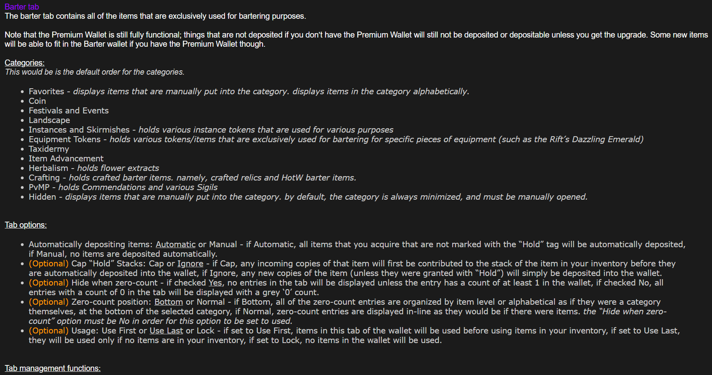
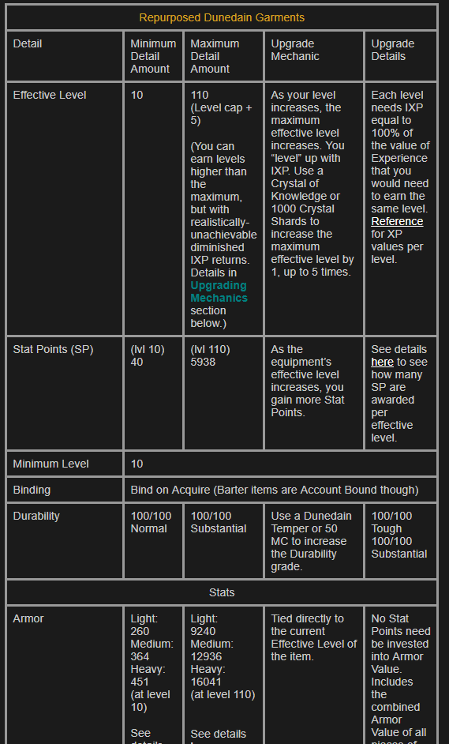
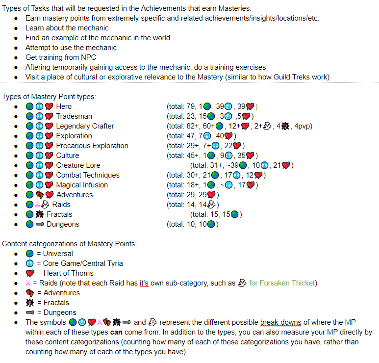
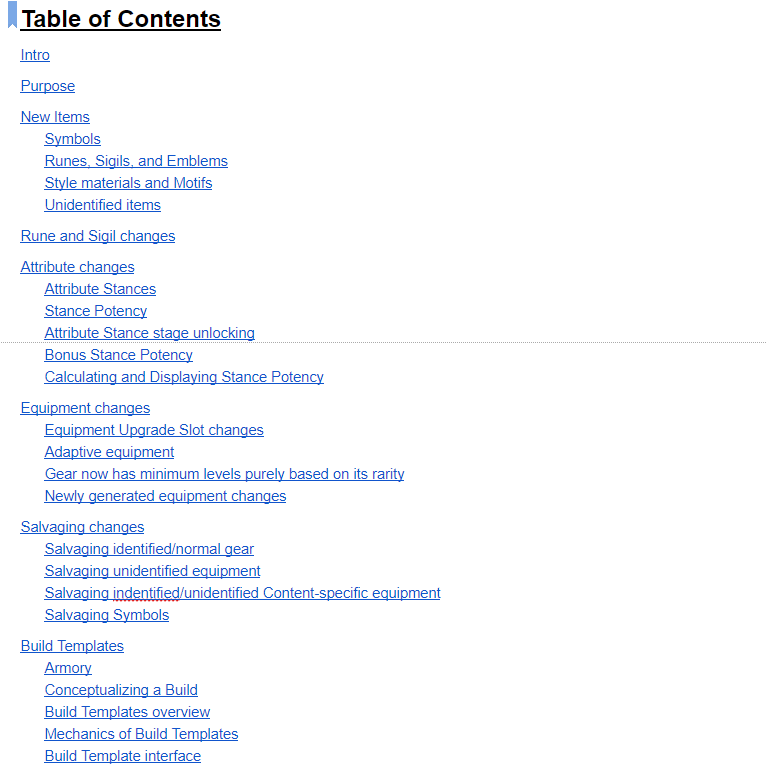
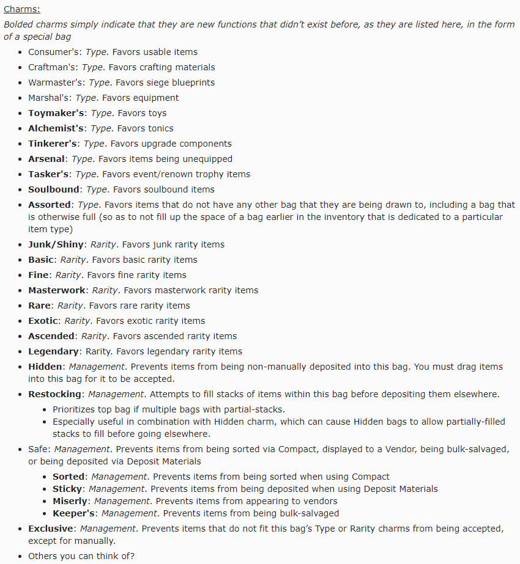

Suggested Systems
This is where I'll put brief descriptions, images, and links to some of the best, in my opinion, system revamps/additions that I've come up with and posted to various game forums.
Table of Contents
Lord of the Rings Online: Expanded Wallet

This suggestion was focused around expanding the "Wallet" that exists within the game. It is used to store currencies, and already has the potential to store probably over a hundred of them, but as the game has grown over the years, it has also gained thousands of unqiue materials, most of which only stack to a limited amount before taking another inventory space, which itself can be fairly limited. This suggestion is centered around expanding the Wallet beyond just storying (infinite) currencies, so that it could now store (infinite) materials of various types. I also worked to make sure that there were some limitations to prevent botting, as well as considered a potential route of monetization of such a system, one that I thought was pretty fair.
I also wanted to make sure that the system would have a lot of customization options, as well as making sure it would have the basic functionality of being able to deposit and withdraw items into this infinite-storage of sorts, which ordinarily only uncontrollably sucks any and all items relevant into it, currently makes it much harder, if not impossible, to clear out older, useless items and making it impossible to trade the items with other players. I listed out many of the core variables and options that would be needed for each and every type of currency and material to make sure that there would be no issues with exploitability, accidental deletion of currency bought with real-world money, and other such important considerations.
Link to the extensive website page.
Link to the original forum post.
Lord of the Rings Online: Scaling Equipment

(Details pending)
Link to the extensive website page. (currently pending)
Link to the original forum post.
Guild Wars 2: Mastery System Revamp

This suggestion is centered around improving one of the central means of progression in Guild Wars 2, ever since Expansions have come out for it. The game doesn't do the traditional thing of increase the level cap with each expansion, it instead adds Masteries, which are unique abilities that are locked behind playing the new content to unlock. However, I've long-since felt that the system did not live up to it's original goal in practice, at least not for me. So, I tried to come up with a way to expand the scope, make progression more meaningful by breaking up the generic "mastery points" into categories of content that you would master in order to earn skills associated with that content, rather than being able to reach a high location in a jungle and randomly being able to turn that into the ability to talk with the native tribes. Under my system, the high location would be considered an Exploration Mastery, and would reward abilities to do with exploration, whereas the talking with native tribes would be restricted to earning Cultural Mastery points in the area.
It also does tackle a system that would help to expand the types of rewards that you can earn from gaining experience points after level cap. Currently, that experience contributes to unlocking the Mastery Abilities (only until you earned them, thouhg), but I've changed that to now give you various rewards you can commit your experience towards, many of them unlocking based on how many Mastery Points you've earned (and/or you earning experience towards the reward faster if you have more of the corresponding Mastery Point(s)).
Link to the original reddit post.
Guild Wars 2: Core Systems Revamp

(Details pending)
Link to the original reddit post.
Guild Wars 2: Modular Management of Inventory Bags

This is probably the simplest suggestion that is posted here, but even still it does manage to have an external reference document associated with it, for the nitty-gritty details. This suggestion revolves around adding Charms that would be able to be added to inventory bags, modularly, to greatly enhance control of how you can store and recieve items in your inventory. It may be over the top for certain players, but it's a completely optional system that is designed to benefit those who really like to have very detailed management of the what-can-otherwise-be-unwieldy inventory system that is Guild Wars 2's.
It also would give some more flexibility to the currently existing bags, which have particular, unavoidable combinations of effects that can be somewhat annoying as it stands.
Link to the original reddit post.